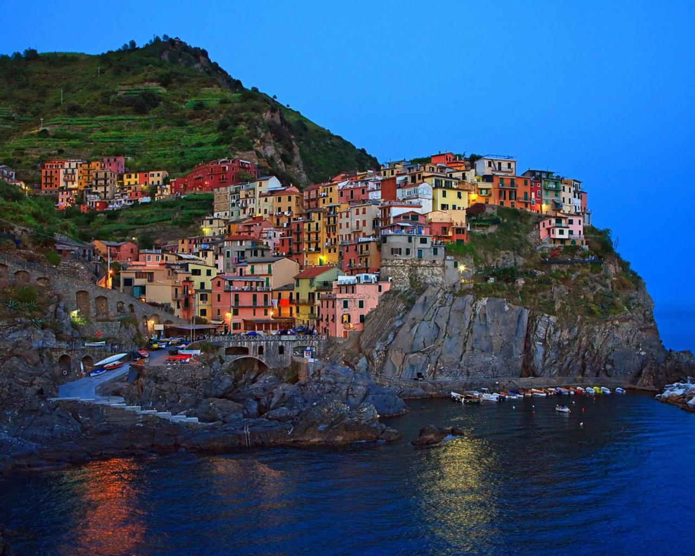
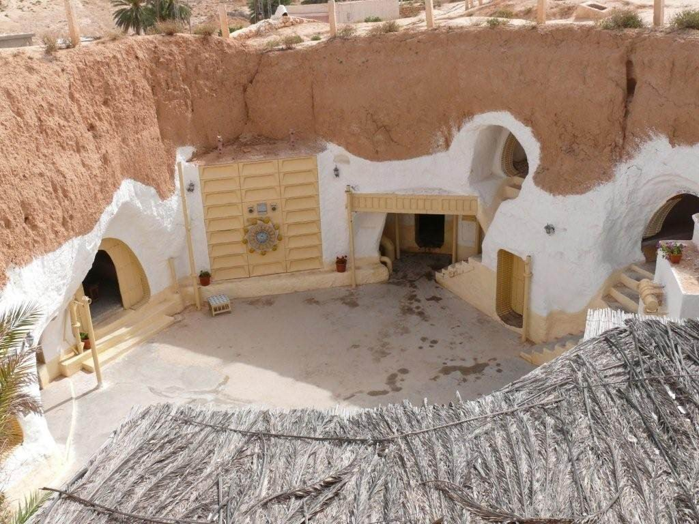
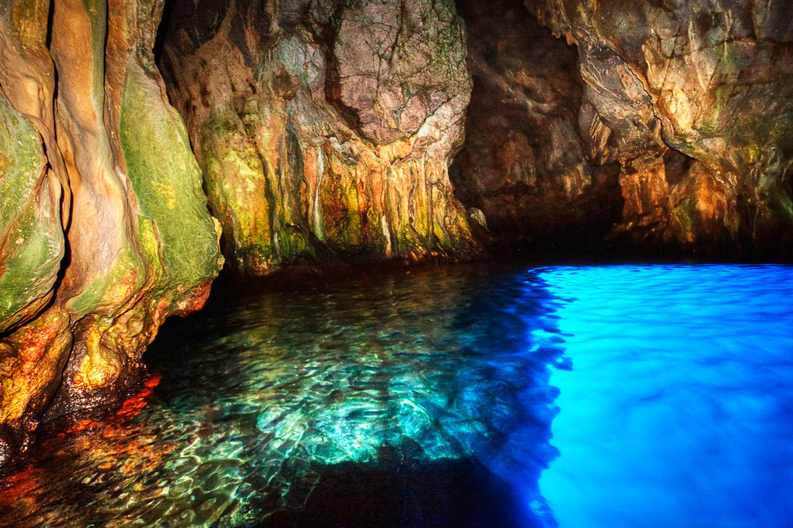

Сардиния
Сардиния - красивый остров в теплых водах Средиземного моря. Это очень популярное место пляжного отдыха в Италии. На острове отдыхающие наслаждаются прелестями морского курорта, сдобренными самобытным колоритом, в окружении живописных мест с нетронутой природой и дикими пляжами.
Чинкве-Терре
На крутых берегах Лигурийского побережья уютно расположился Национальный парк Чинкве-Терре (объект Всемирного наследия ЮНЕСКО). Это своего рода древняя коммуна, включающая в себя пять красочных селений, самым большим из которых является поселок Монтероссо. Его можно узнать по монохромным фасадам четырех- или пятиэтажных домов и своеобразной расцветке средневековых сооружений.
Самое маленькое селение коммуны – Корнилья, а наиболее красивое – Вернацца. Архитектурные особенности построек Манарола выдают его возраст, этот населенный пункт является самым древним. Южная точка яркой коммуны – Риомаджоре мало чем отличается от первых четырех поселков. Он выполнен все в той же пестрой цветовой гамме, здесь такие же узенькие улочки и такой же незамысловатый жизненный уклад.
Пещерный город Сасси ди Матера
Матера – город, история которого корнями уходит в эпоху неолита. Появился он в красивейшей расщелине Гравина ди Матера, расположенной в долине полноводной реки. Сначала Матера был обычным греческим селением, а спустя время, в эпоху величия Римской империи, его превратили в настоящую крепость, защищенную высокой стеной.
Погодные условия данной климатической зоны и потребность в надежном укрытии привели к тому, что дома стали сооружать в тихих гротах и вырубывать в массивных скалах. Так появились удивительные кварталы Сасси, с жилыми помещениями, сделанными в виде пещер, и узенькими улочками, оборудованными удобными лесенками.
Голубой грот на острове Капри
Главная достопримечательность острова Капри – изумительной красоты Голубой грот, равного которому нет на всей планете. Сказочная пещера была открыта немецким поэтом Августом Копишем еще в 1826 году, хотя упоминания об этом удивительном месте можно найти еще в произведениях древней литературы и в древних документах.
Чтобы попасть внутрь грота, нужна небольшая лодка, а проплыть невысокие своды пещеры можно только лежа на дне плавсредства. Размеры грота небольшие (длинна около 56 метров, ширина – около 30 метров), поэтому одновременно внутри может находиться не больше трех лодок. Купаться здесь запрещено, зато можно сделать массу великолепных снимков.
Долина Кьянти

Родина знаменитых красных вин Италии и, возможно, один из лучших регионов для автопутешествия: кипарисовые аллеи, зеленые холмы и бескрайние поля с подсолнухами — то, за что так любят Тоскану путешественники со всего света.
Перевал Сан-Пеллегрино
Доломиты Горный хребет на северо-востоке Италии — одно из лучших мест для скалолазания, катания на лыжах и созерцания красоты Доломитовых Альп.
Кьяйя-ди-Луна, Понца
Великолепной красоты залив на острове Понца окружен высокими утесами, которые напоминают поверхность луны — отсюда и название.
Лукка, Тоскана
Антикварные магазинчики, более 100 церквей, трактиры с аутентичной тосканской кухней и отсутствие толп туристов — главные достоинства этого города. Сан-Джиминьяно, Тоскана Средневековые пейзажи и живописные виноградные долины заставляют возвращаться сюда даже тех, кто исследовал Тоскану вдоль и поперек.